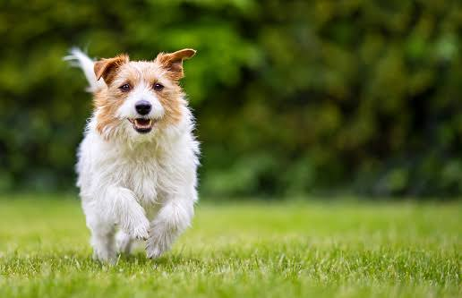
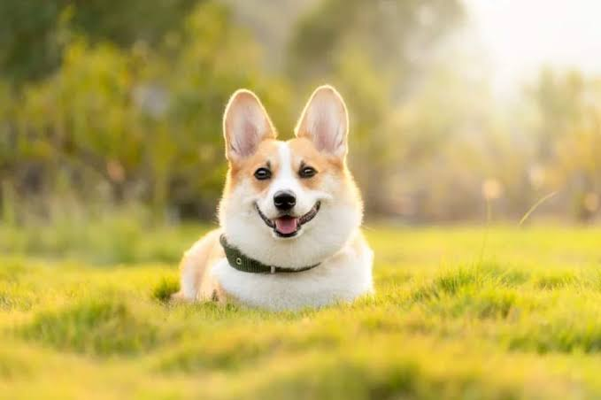

-
-
Samuel Green
- actively online now
- Hi, good morning. you requested
for a walker.
- could you please,kindly send the
picture of the dog
- 
- 
- this is it,three dogs.can I make a payment now?
- How much is it?
- Thanks for your response, we will get back
to you as soon as possibe .
- for the german
- for the others
- type a message
-
Simple booking
stay in touch with our dog walker through the chat
interface.
this makes it easy to discuss arrangement and
make bookings.
once the walk is completed you can
rate your walker and
book again all through the chat.